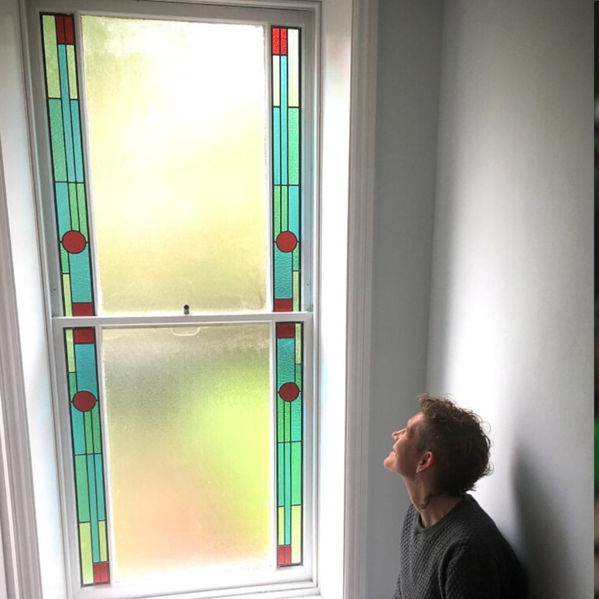
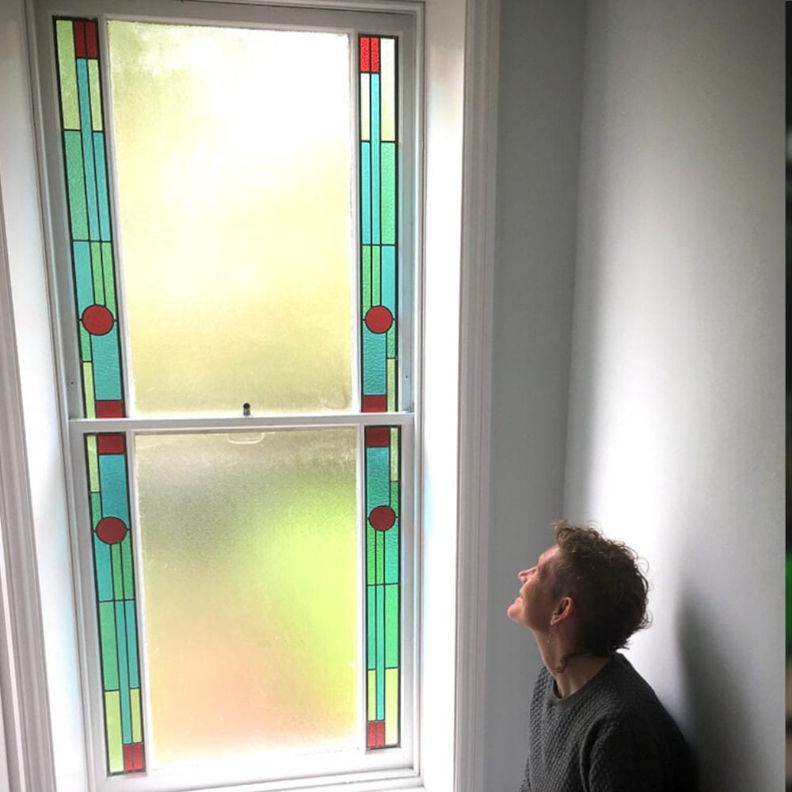

"Anna’s bespoke work is simply beautiful. There is a real elegance and understated beauty to the way the glass is designed and put together. It’s been hanging in our window for a few months now and we love seeing the different ways that it catches the light."
If you are interested in commissioning a stained glass window, door panel or gift this is an outline of the process.
We would begin with an initial design consultation (this is free of charge). If you are local I will come and visit you and discuss your requirements or if you prefer you can visit my studio where you can see glass samples and references. If you aren’t local or if an in-person meeting isn’t possible we can also do this by phone or video call.
Once the initial ideas have been discussed I can give you a ball park quote and if you are happy to proceed we can finalise design ideas and measurements and produce a formal quote and schedule of work. At this point you will be required to pay a one third deposit to confirm the order.
"Anna created the most beautiful stained glass design for a window in my hallway in Hackney. Although the size of the glass was limited she came back to me with a selection of really creative designs."
On receipt of the deposit a scale drawing of the design will be produced for your comment and approval and glass colours and textures can be chosen (samples can be sent by post or viewed at my studio).
From this point the lead time is between 5 and 15 weeks depending on workload. Before construction begins a midway payment will be invoiced for, and the final payment will be due on completion.
"Once we had decided on a design she then gave me a clear time frame of when it would be completed. It is a joy to look at and I only wish I had done it many years ago."
Once the windows are ready they can be delivered directly to you or you may wish to collect them yourself.
Prices for stained glass can vary enormously depending on the complexity of the design and the type of glass used. You can expect to pay between £200 - £500 per square foot. Delivery and fitting costs are extra.
You may already have an idea for a design, but if you need inspiration take a look through my design collection
If you would like to discuss a commission please get in touch.